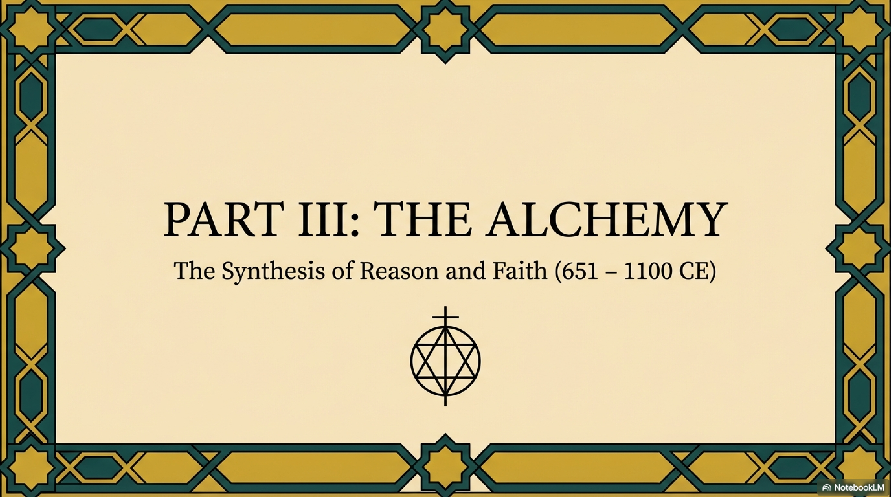
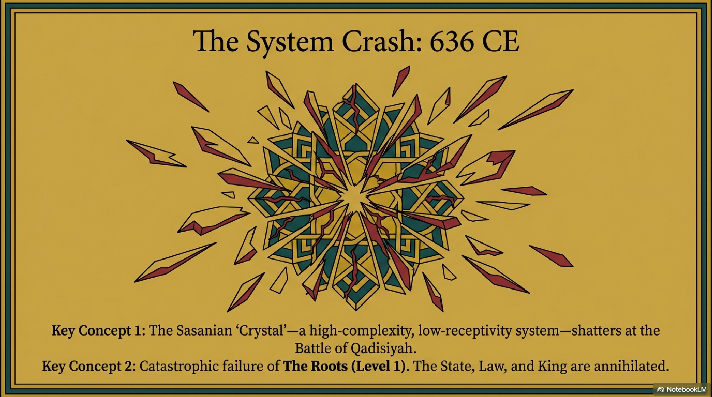
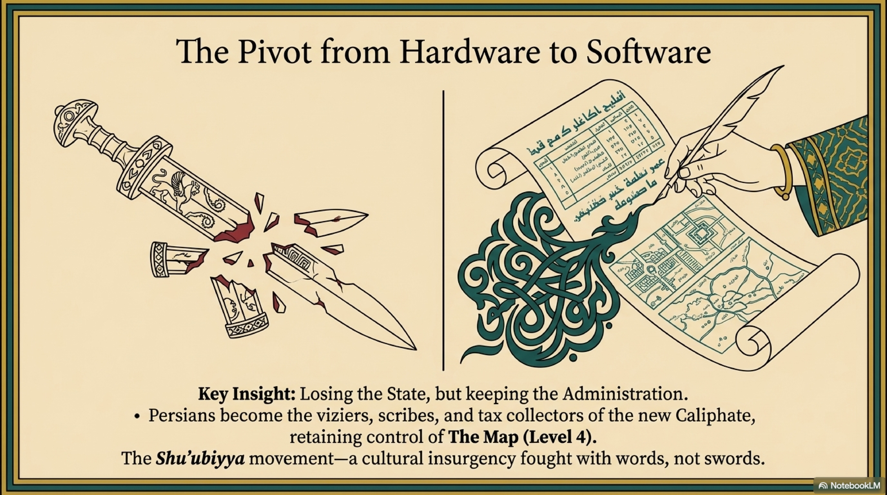
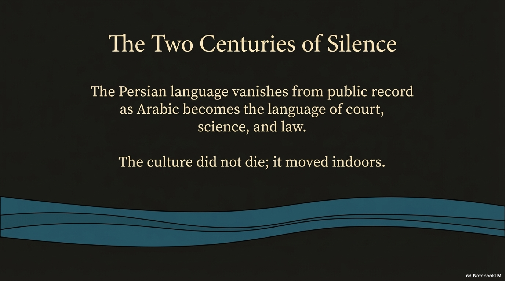
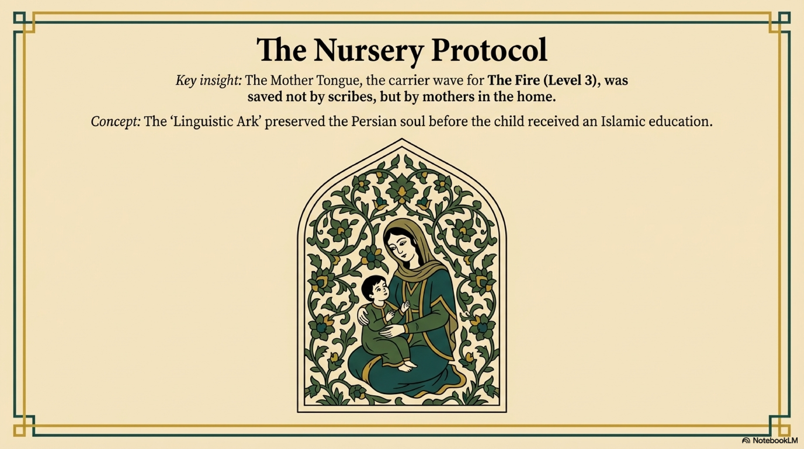

If the Book of Judgments was the legal skeleton of the Sasanian Empire, the Fire Temple was its beating heart.
To the modern observer, a Zoroastrian ritual might look like a solemn religious ceremony. A priest in white robes, a burning fire, the recitation of ancient texts.
But through the lens of our structural analysis, a Fire Temple was not just a church. It was a Coherence Generator.
It was a piece of social engineering designed to synchronize the consciousness of an entire population at the biological and emotional level. It was the technology that kept the Sasanian crystal from fracturing under its own weight.

The central ritual of Zoroastrianism is the Yasna. It is a complex, high-intensity liturgy consisting of seventy-two chapters of recitation and ritual action. It takes hours to perform.
Why seventy-two chapters? Why the specific intonation? Why the precise movements of the hands?
We often dismiss ritual as empty formalism. But ritual is a powerful cognitive technology. It operates on the principle of Entrainment, functioning directly on The Rhythm (Level 2).
First is Sonic Driving. The Avestan language is resonant. The manthras, or sacred words, are not just conveying information; they are rhythmic sound-forms. Reciting them for hours creates a state of high focus. It shifts the brain from the chaotic beta waves of daily life into the synchronized alpha and theta waves of deep coherence.
Second is Visual Anchoring. The Fire, or Atar, provides a single, high-energy focal point. It is a plasma, the most dynamic and yet consistent form of matter. Staring into a fire suppresses the wandering mind and locks attention into the present moment.
Third is Biological Rhythm. The ritual involves the purification of water, the pounding of the Haoma plant, the precise interplay of sitting and standing. It engages the body.
The Yasna was a Phase-Locking Mechanism. When a community gathers around the fire and participates in this rhythm, they are harmonizing their internal clocks. They are tuning their nervous systems to a shared frequency.

But the priests were not the only ones maintaining the rhythm. This is where we see the Hidden Stream—the Yin Operating System—at work.
While the State built the great Fire Temples, the women built the Domestic Temple.
The most enduring achievement of this era was not a building, but a calendar. The festival of Nowruz, the Persian New Year.
Nowruz is not a political holiday. It is a cosmic alignment. It occurs at the exact second of the Spring Equinox. It aligns the time of the human tribe with the time of the planet.
The preparation for Nowruz involves a ritual called Khaneh-tekani, literally "Shaking the House." Every carpet is beaten, every window washed, every piece of furniture moved.
In our framework, this is a massive, collective act of Entropy Reduction.
The mothers understood that dust is physical disorder. By rigorously cleaning the physical environment once a year, they were resetting the system. They were clearing the cache. They were teaching the family that order is not something you find; it is something you make, with your hands, every single spring.
This domestic rhythm was more resilient than the state liturgy. A conqueror can burn a temple, but he cannot stop the spring. He cannot stop a mother from cleaning her house. This is how The Rhythm survived when The Roots were destroyed.

The Fire was the perfect symbol for this civilization because Fire is the ultimate act of Transmutation.
Fire takes raw, chaotic matter—wood and fuel—and converts it into pure energy—heat and light. It is a visible demonstration of the entropy-coherence exchange.
The Persians did not worship the fire itself; they worshiped what it represented. The Fire was the visible form of Asha, or Truth. It is upright. It requires constant tending. If you neglect it, it dies, and entropy wins.
The "Ever-Burning Fires" of the great Sasanian temples were thermodynamic statements. They were a promise: As long as we feed this fire, the Order of the World will hold.

But here lies the tragedy of the Sasanian experiment.
A system that relies on rigid, high-intensity ritual to maintain coherence is energetically expensive. It requires a massive priesthood to maintain. It requires a population willing to submit to complex, daily restrictions.
Alongside the ritual, the Sasanians codified an intense system of Purity Laws known as the Vendidad. These laws governed everything from hygiene to menstruation to the disposal of the dead.
To the Persians, pollution was physical entropy. It was the intrusion of The Lie into the world of Truth. By strictly regulating the boundaries between "Clean" and "Unclean," they were trying to create a hermetically sealed environment.
But as the centuries passed, the Liturgy of Light began to dim.
The rituals became rote, performance without feeling. The Purity Laws became a burden, a tool of social control rather than spiritual hygiene. Coherence became Coercion.
The people were still going through the motions. The Fire was still burning. But the resonance was fading.
The Sasanian Mind had become a Zombie System: highly structured, but internally hollow. It created a vacuum. A spiritual hunger. The people were waiting for a new signal.
And the first cracks in the crystal began to appear—not from the outside, but from within. From a prophet who looked at the Light and saw only a trap.
Enter Mani.